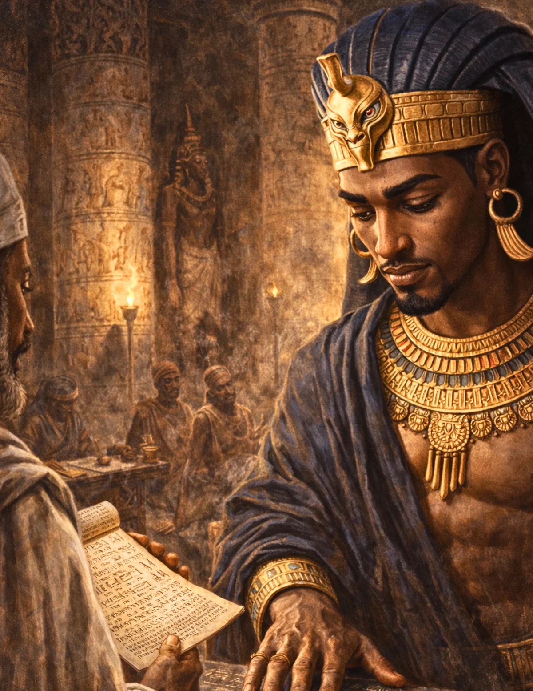

Shabaka (Shabaqo)
An ancient stone, a damaged text, and the evidence a ruler wanted preserved.
Begin the Lesson ↓
Essential Question & Learning Objectives
Essential question: What can a damaged sacred inscription reveal about kingship, religion and the decisions that shape which ideas survive?
Students will be able to:
- Place Shabaka within the Kushite Twenty-Fifth Dynasty and explain cultural connections between Nubia and Egypt.
- Describe the Shabaka Stone as a surviving physical object, an inscription, and a royal claim about textual preservation.
- Explain how missing portions and later reuse limit the confidence of a reconstruction.
- Produce an interpretive label that separates physical evidence, textual claims and scholarly interpretation.
Success criteria: Explain two accurate historical details, examine at least one source limitation, make a supported claim, and score 4 of 5 on the post-check after review. The post-check is not a substitute for assessment of written reasoning.
Teacher Guide · Pacing, Standards, UDL & Differentiation
Suggested pacing: Hook and prior knowledge 5 min; readings, source comparison and questions 18 min; two Decision Rooms 12 min; performance task and peer discussion 15 min; final check 8 min. Adjust as needed; timer buttons are voluntary.
Instructional alignment: CCSS RH.6-8.1 (cite evidence), RH.6-8.2 (central ideas), RH.6-8.9 (compare sources); WHST.6-8.1 and WHST.6-8.9 (argument and evidence). Extend with grades 9–12 RH/WHST source criticism and historiography where appropriate; these are alignments, not a state endorsement.
UDL options: Let students reread chunks, use device accessibility tools, write or speak a claim, annotate a timeline/map, and revisit feedback without penalties. Use visual models alongside print rather than relying on audio alone.
Misconception to watch: The stone's claim to copy a much older damaged manuscript is not independent proof that such a manuscript existed exactly as described.
Discussion practice: Ask students to separate the author's claim, the source's date and purpose, and the conclusions we can support.
CAST UDL Guidelines 3.0 · Common Core grades 6–8 historical literacy
Independent Learner Guide · Saving, Progress & Assessment
Start with the diagnostic. Read the three illustrated inquiry sections. Check responses and read the explanations; revise as needed. Decision Rooms are hypothetical choices that help analyze evidence, not factual reconstructions. Complete the final claim and five-item check. The progress bar measures how far you scroll, not mastery; timers are optional and cannot lower a score.
The written reflection saves only in this browser when you press Save. Avoid personal information on shared devices. Optional video areas indicate future, carefully verified media rather than implying an unpublished video exists.
The Stone That Survived Two Kinds of Damage
Imagine a large slab of stone. A royal text says an earlier manuscript was decaying and needed to be preserved. Centuries later someone reuses the slab, wearing away parts of the inscription. You can see words, gaps and the marks of reuse—but can you recover the entire original message?
Shabaka's story invites a double investigation: what the inscription says about religion and the authority of kings, and what the surviving artifact itself proves about the passage of time.
Formative · Bloom: remember and understand · Do not grade the diagnostic
Before reading: Which statements are sensible when an artifact contains a damaged text?
A Kushite King in Memphis
Shabaka (also written Shabaqo) was a ruler of Kush's Twenty-Fifth Dynasty during a period when Kushite kings governed Egypt as pharaohs. In the late eighth and early seventh centuries BCE, the Nile Valley connected political capitals, temples and trade communities over great distances. Kushite rulers drew on long-standing Egyptian sacred and royal practices while maintaining their Nubian backgrounds.
The city of Memphis held major religious and political importance. There, the god Ptah was especially prominent. Connecting the royal name to sacred knowledge and temple institutions could help present a ruler as legitimate within a respected tradition.
The precise order and dates of some Twenty-Fifth Dynasty rulers remain subjects of scholarly chronological discussion. For our investigation, it is enough to understand that Shabaka belonged to a Kushite dynasty operating across Egypt and Nubia.
Check 1 · Which claim about Shabaka is defensible?
The Shabaka Stone as an Artifact
The British Museum holds the monument known as the Shabaka Stone (EA498), associated with Memphis around 710 BCE. It contains a religious text centered on Ptah, divine creation and an ordering of the world. The opening presents the king as preserving a version of knowledge said to have been damaged in an earlier written source.
Modern readers face a difficult problem: much of the stone is damaged. It was reused as a grinding surface, leaving wear that destroyed some text. Translations necessarily depend on what is legible, comparisons with other Egyptian concepts and sometimes contested restorations.
When a museum label calls the inscription 'ancient theology,' that describes a religious explanation preserved in a historical object. It does not mean that historians can independently verify the religious events described by the text.
Check 2 · Which interpretations separate evidence from claim?
Watch & Examine · The Shabaka Stone in the Museum
A related, age-appropriate museum or scholarly video will be embedded here after editorial and timestamp verification. The lesson and assessments work without video.
Suggested future video chapter prompts: museum orientation (timestamps pending), physical wear (pending), inscription and competing interpretations (pending).
For primary research now, open the linked museum or historical sources at the end in a separate tab.
Preserving a Text—or Constructing Authority?
The inscription links thought, speech and creative power with Ptah. It reflects ideas important to Egyptian religious thought and to the cultural environment in which Shabaka's court presented itself. Its language and setting invite questions about whom it was written for and how the king's role was represented.
The text claims an earlier written work was rescued from decay. Scholars have debated whether this is a literal description of an old manuscript, a literary convention, or a combination of preservation and reinterpretation. A cautious historian does not turn one royal statement into definitive evidence about a lost original.
This is why the Shabaka Stone is especially useful in school: the same object can support an art-history question, a religious-history question and a source-analysis question, but the standards for a defensible answer differ.
Decision Room: Repair the Missing Text?
Formative historical inquiry · Scenario is a modern teaching simulation, not a reconstructed conversation
Your museum team is preparing a public digital reconstruction. Visitors want a complete text, but much is illegible. How should you present the missing lines?
Decision Room: The Ancient Manuscript Claim
Formative historical inquiry · Scenario is a modern teaching simulation, not a reconstructed conversation
A visitor asks whether Shabaka truly found and copied a much older papyrus. Which research method gives the strongest response?
Curate an Evidence-First Museum Exhibit
Write an exhibit panel for the Shabaka Stone that would help a visitor understand its importance without confusing restoration or royal statements with verified fact.
- Produce a 150-word object label identifying EA498, religious content, later damage and uncertainty.
- Create a two-column display separating 'what survives on the stone' from 'what scholars infer or debate.'
- Record a two-minute docent explanation of why missing text can change interpretation; cite at least two details.
Every option needs: A clear claim; at least two details grounded in the readings; one acknowledgment of uncertainty; an explanation linking evidence to the conclusion.
Summative performance · 5–6 strong · 3–4 developing · 0–2 revise and conference
Show What You Know
Answer five questions, check each explanation, and revise as necessary. Correct feedback includes a confetti burst; inaccurate selections receive red feedback. Answers stay on this device.
1. The Shabaka Stone is associated with which dynasty?
2. A physical feature that affects translation is...
3. Which statements are supported by sound source criticism?
4. The text's references to Ptah are especially useful for studying...
5. A responsible museum reconstruction would...
A Forensic Exhibit Laboratory
- Make a sample 'damaged inscription' by masking text on paper; compare how two student groups reconstruct missing sentences.
- Write an exhibit label in two voices: a royal court celebrating preservation and a modern curator explaining historical uncertainty.
- Research how museums conserve inscriptions and identify why an object can be reused for a purpose far removed from its original meaning.
Sources, Interpretations & Evidence Limits
The Shabaka Stone is a physical artifact at the British Museum. Its theological text and the circumstances of its transmission are subject to interpretation; comparisons below distinguish a modern museum explanation from the surviving source.
Reading and scenarios are original educational synthesis and simulations, not quotations from these sources. External material opens in a separate tab. Verify exact wording, dates, and image permissions when assigning outside content.